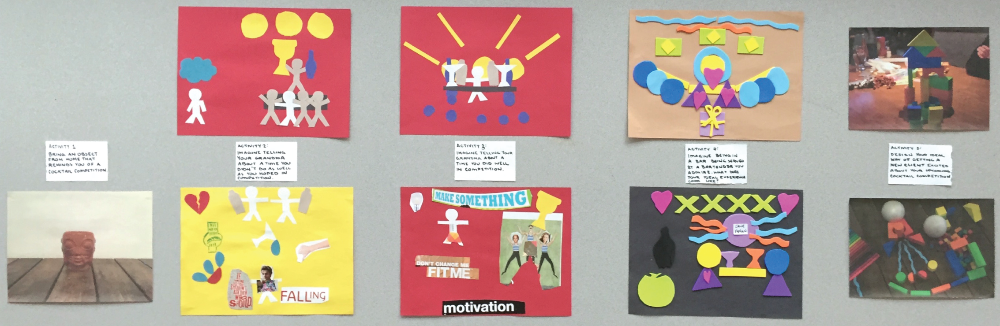
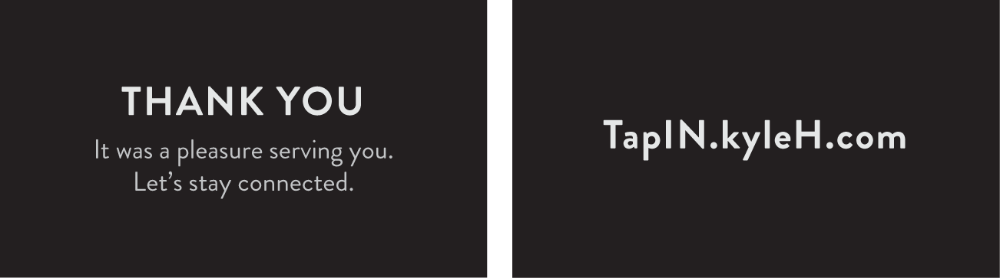
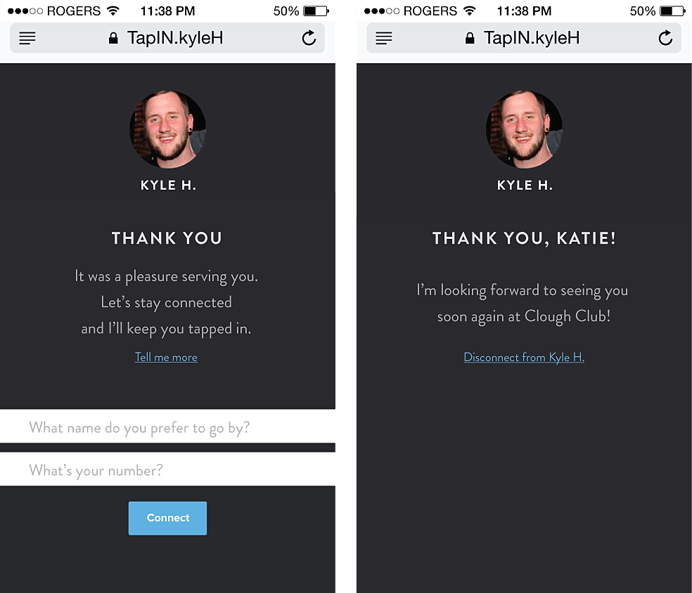

Tap proposes to increase the time a bartender gets to interact with customers by extending the service period outside of the bar. It's an app for bartenders to keep track of their customers, to contact them via SMS and check in and invite them to events and tastings they might like, or even just to say "Hi. Thanks for coming in last night."
My Role: Field Research, Ideation, UI/UX Design, Cinematography, Post-Production
Team: Kristy Hung, Stevie T.A. Nguyen
Research
Getting to know the client and identifying a problem that matters.
The Brief
For this twelve week long project, we were tasked to design anything for an existing social group of our choice as the client. We would identify pain and pleasure points within the B2C environment and pinpoint opportunities to shape a design that meets those needs while bringing value to both the company's brand and strengthening its relationship with its customers.
About the client: Clough Club
Clough Club is a cocktail bar in the Gastown area of Vancouver, BC.
Involving Stakeholders Early in the Process
Engaging with the people we were designing for in the early stages helped us uncover insights, clarify assumptions, and identify value paths that facilitated in design decisions. Field research through ethnography, cultural probes, and participatory workshops helped us understand and differentiate between what they say, do, and make so we could discover unmet needs.
Ethnography
Conducted over ten weeks, data was collected through on-site visits and observation, note taking, audio and video recording, photography, and informal interviews with bartenders and customers. As a result, we were able to identify behavioural patterns and reccuring themes that help define the culture around being a bartender.
Key findings about Clough Club's bartenders and customers:
Prepares the bar two hours before opening hours
Primarily interacts with customers rather than other staff members when working
Gives directions to tourists visiting the bar
Talks to regulars about preparing for their upcoming cocktail competitions
Cultural Probes
Each cultural probe contained 3 magnets with tabs to tally good, average, and bad days, 1 cocktail and bar-themed Mad Libs shareable notepad, 1 pen, 1 green and brown leather wallet for personal receipts, and 1 green leather bound personal cocktail recipe notebook. Upon receiving the cultural probe back after ten days of deployment, we conducted interviews and learned about with whom and how they spent their time and money.
Key findings about both bartenders’ experiences:
Spent a lot of time developing competition drinks
Went to a bar in Seattle and the bartender there gave a bottle of wine to them only, making them feel special
Memorable experience because they felt special
Gave the bartender 30% in tips for his special service
Participatory Workshop
During both two hour sessions, participants were given a toolkit and instructed to assemble 2D and 3D collages based on a scenario given to them. Both participants were bartenders employed at Clough Club. The results helped us understand both participants as a bartender and as a customer. Not only did these generate insights that helped identify values paths that facilitate customer retention, but it also futhered our knowledge in the bartending culture.
The five activities were:
Bring an object from home that reminds you of a cocktail competition.
Imagine telling your grandma about a time you didn't do as well as you hoped in a competition.
Imagine telling your grandma about a time you did well in a competition.
Imagine being in a bar being served by a bartender you admire. What does your ideal experience look like?
Design your ideal way of getting a new client excited about your upcoming cocktail competition.

Synthesizing our Research & Discovering Patterns
This is not the right sentence. This means the highest tips often comes from regulars. Sitting at the bar versus sitting anywhere else in the bar directly affects how much interaction a bartender has with their customers.
Identifying the Problem
A good bartender knows it’s not about the drinks; it’s about the experience.
Bartenders have no way of developing service relationships outside of the bar. They rely on tips, but tips from the general public is often low and inconsistent. This means the highest tips often comes from regulars.
Sitting at the bar versus sitting anywhere else in the bar directly affects how much interaction a bartender has with their customers. Regulars are more likely to sit at the bar, interacting with the bartender, making them feel like the bartender deserves a greater tip.
Ideation
Exploration & Rejected Ideas
Building on newly found research and synthesis, we shifted from one design focus to another. These initial ideas were rejected because they failed to answer how it solves the problem and create meaningful experiences.
Rejected ideas include:
Establish a bartender's credibility through their achievements and dedication towards experimenting new cocktail recipes.
Watch depictions of the ingredients in customers' drinks grow on an interactive medicine cabinet at Clough Club.
Arriving at our Final Idea
At which point in time during the customer journey are we trying to address? How will the product continually provide value over time? How does this address the problem? Does it help the bartender in any way? What do they need? When? We asked ourselves questions such as these to make sure we aren't designing for the sake of design, but each component in the end product works coherently to solve the problem.
Microtrends
Designing for the near future meant looking at what trends were currently shaping design.
Lateral Thinking
By connecting seemingly unrelated possibilities, we integrated the subscription model within the context of a bartender.
Wireframes & Early Iterations
Content first, then visuals. If the product doesn't work, lacks usability, nor deliver value, nobody is going to use it no matter how pretty it is.
Product and Design Considerations
It is important to keep asking ourselves if what we're proposing to be included as part of the product delivers value and helps address the problem. If not, we filter it out.
We initially thought of making an app for the customer as well, but realized it was unneccessary because they don't need another app on their homescreen just to communicate with the bartender.
Calender view. The aspect of keeping track of customers prompted a calendar at first, but which specific day a certain customer came in was not top priority information needed.
Result
A Personal Invitation
What this is:
A card bartenders give to customers they had a great time with.
Card has bartender’s personalised url which directs them to a simple sign-up page thus extending the service outside of the bar.
But why?
Service evidencing; objects that remind customers of the good service moments and therefore through emotional association, continue to enhance their perception of the service they’ve received.
Make customers feel special.

Easy Sign Up Process
What this is:
Customers can opt-in by inputting their name, photo, and phone number.
Phone number is confidential and not visible to the bartender, but is needed to receive text messages to their native messaging app for updates and conversations from the bartender.
But why?
Simple forms decrease abandonment in the sign-up process.

Dashboard
What this is:
Immediately actionable items are put on the home dashboard.
Notified of new connections and reminds bartenders of unreplied messages.
But why?
If customers feel ignored, value is lost.
Numbers give intrinsic value.
Customer Database
What this is:
A customer database categorized alphabetically, by last visit, flavour profiles, and favourites.
But why?
Categorizing speeds up the process of searching for specific customers and types of customers.
Messaging
What this is:
Bartenders can converse with customers, extending their service outside of the bar and can let their personality to continue to shine through.
Messages sent within the app will be delivered as a text message to the customer’s native messaging app.
But why?
Integration with native messaging app eliminates the customers’ need to download another application.
Further developing their service relationship with a customer helps increase chances of retention by making them feel important.
Reflection
Design is empathetic
bleh
Design is co-creative
bleh
Design with real data and field research
bleh bleh